IIT M DIPLOMA AN1 EXAM ETD1 11 Dec 2022 - 11 Dec 2022
MLT End Term30 questions100 marks15 SA · 12 MCQ · 3 MSQDiploma
Elapsed 00:00
Q1MCQ3 marks
What will be the result of applying ReLU to the following values?: -2.7, 3.9, -1.0, 4.2, 6.4, -7.3
1, 3.9, 1, 4.2, 6.4, 1
0, 1, 0, 1, 1, 0
-2.7, 0, -1.0, 0, 0, -7.3
-1, +1, -1, +1, +1, -1
0, 3.9, 0, 4.2, 6.4, 0
Q2MCQ3 marks
Suppose you run gradient descent for linear regression for 500 iterations with a learning rate 0.02. You observe that the training loss (sum of squared loss) is increasing after every iteration. What may be the reason? What changes would you make to the set-up for the gradient descent to converge to a solution?
Number of features in the training data may be too low, try increasing them.
Number of features in the training data may be too high, try reducing them.
Learning rate may be too low; Try increasing it.
Learning rate may be too high; Try reducing it.
Q3MCQ4 marks
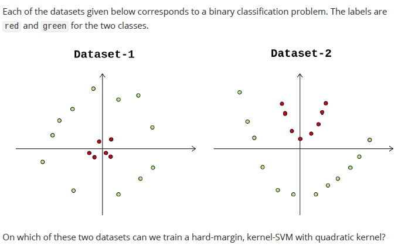
Only dataset-1
Only dataset-2
On both dataset-1 and dataset-2
Neither dataset-1 nor dataset-2
Q4MCQ4 marks
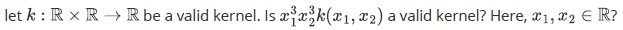
Yes
No
Q5MCQ4 marks
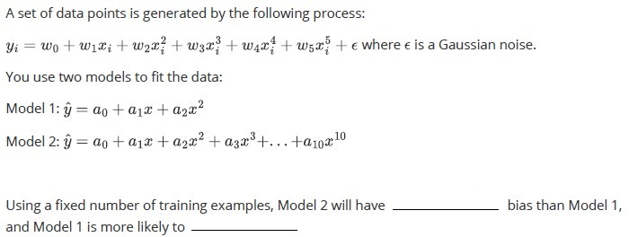
Higher, underfit
Lower, overfit
Higher, overfit
Lower, underfit
Q6MCQ5 marks
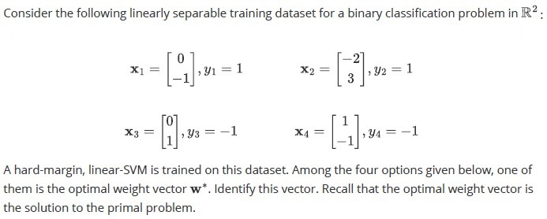
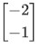
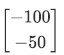
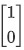
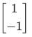
Q7MCQ5 marks
Consider the following data set:
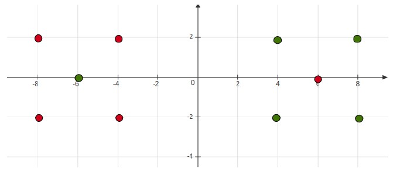
Consider the following data set: Which of the following will have lower leave-one-out cross-validation error?
1-Nearest Neighbor
3-Nearest Neighbor
Q8MCQ6 marks
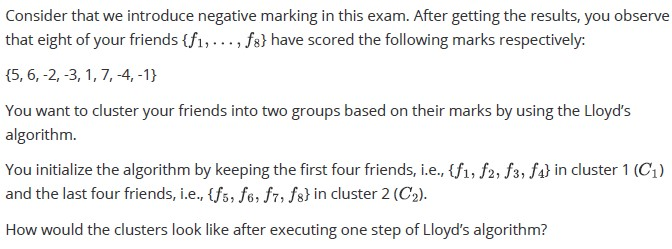
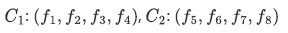
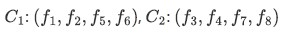
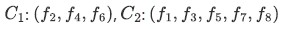
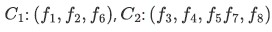
Q9MSQ5 marksselect all that apply
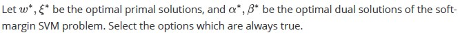
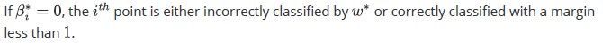
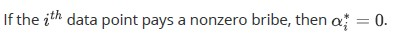
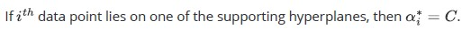
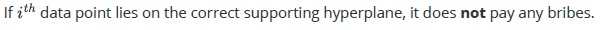
Q10MSQ2 marksselect all that apply
Which of the following estimators are more likely to be preferred for bagging? Select all that apply.
A decision stump
A decision stump with randomly selected features for splitting the nodes
k -NN classifier with a smaller value of k.
k-NN classifier with a larger value of k .
A fully grown decision tree with randomly selected features for splitting thenodes
Q11SA5 marks
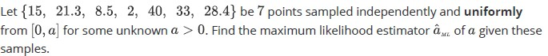
Q12SA5 marks
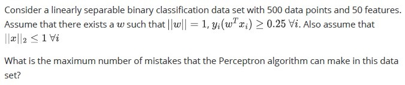
Q13SA4 marks
Consider a neural network with 8 inputs and 2 outputs. If there are 4 hidden layers each with 4 neurons, how many parameters need to be learnt if there is a bias associated with each neuron in the hidden and output layers?
Comprehension passage - the questions below it refer to this
Based on the above data, answer the given subquestions.
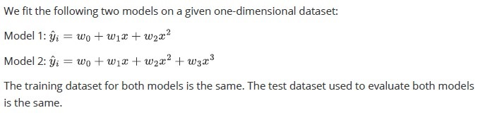
Q14MCQ2.5 marks
Which of the two models is more likely to fit the training data better?
Model 1
Model 2
Both will fit equally well
Can not say
Q15MCQ2.5 marks
Which model is more likely to give less test error?
Model 1
Model 2
It will depend upon the underlying distribution that generates the dataset andtherefore, can not say.
Both will give the equal error
Comprehension passage - the questions below it refer to this
Based on the above data, answer the given subquestions.
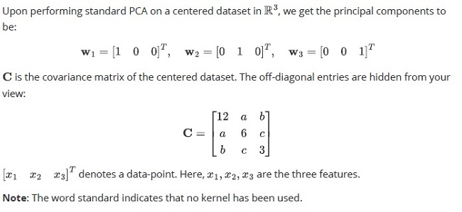
Q16SA3 marks
What is the variance along the first principal component?
Q17MCQ3 marks
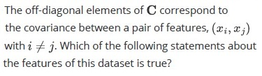
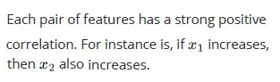
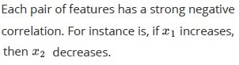
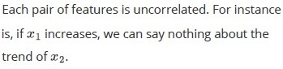
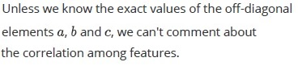
Comprehension passage - the questions below it refer to this
Based on the above data, answer the given subquestions.
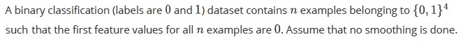
Q18SA3 marks
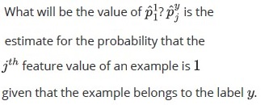
Q19MCQ3 marks
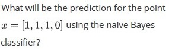
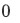
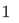
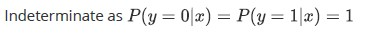
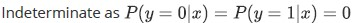
Comprehension passage - the questions below it refer to this
Based on the above data, answer the given subquestions.
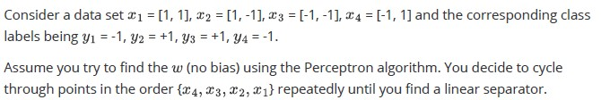
Q20SA3 marks
How many mistakes does your algorithm make?
Q21SA3 marks
What is the squared length of the weight vector corresponding to the final linear separator your algorithm outputs?
Comprehension passage - the questions below it refer to this
Based on the above data, answer the given subquestions.
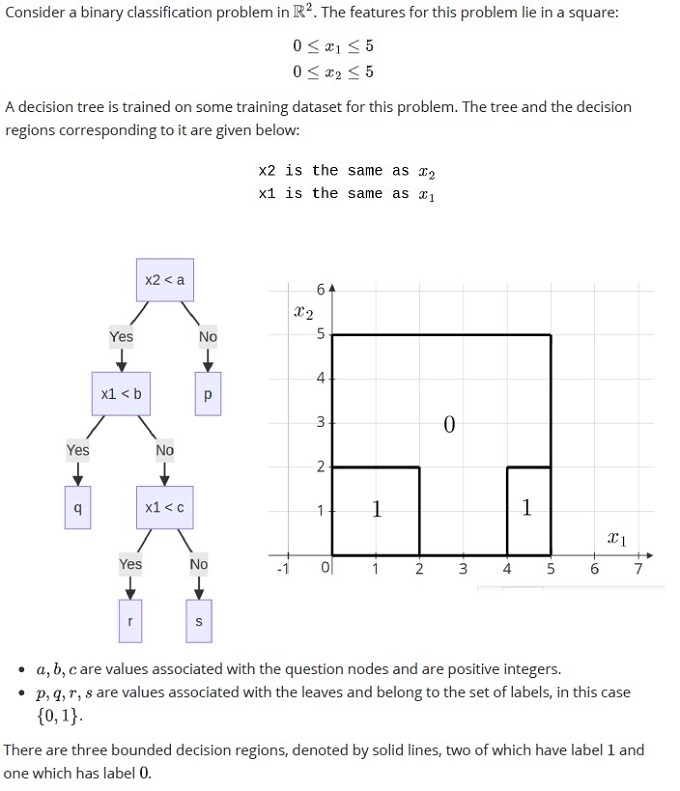
Q22SA1.5 marks
What is the value of a?
Q23SA1.5 marks
What is the value of b?
Q24SA1.5 marks
What is the value of c?
Q25SA2.5 marks
Comprehension passage - the questions below it refer to this
Based on the above data, answer the given subquestions.
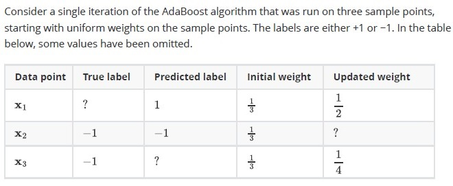
Q26SA2 marks
What will be the true label for point x1 ? Enter 1 or -1 .
Q27SA2 marks
What will be the updated weight for point x2 ? Enter your answer correct to two decimal places.
Q28SA3 marks
How much training error will be incurred by the first estimator? The training examples consist of given three points. Enter your answer correct to two decimal places.
Comprehension passage - the questions below it refer to this
Based on the above data, answer the given subquestions.
Auto-generated summary from the source site. Handy as a checklist; the lessons above explain each idea from scratch.
Here’s a structured summary of the core topics, concepts, principles, and equations essential for the Diploma-Level Machine Learning Techniques exam, along with a Mermaid knowledge graph to visualize relationships.
Core Topics & Key Concepts
1. Activation Functions
ReLU (Rectified Linear Unit):
Definition: ReLU(x)=max(0,x)
Outputs: 0 for x<0, x for x≥0.
Example: For inputs [−2.7,3.9,−1.0,4.2,6.4,−7.3], outputs are [0,3.9,0,4.2,6.4,0] (Q2).
2. Gradient Descent & Optimization
Learning Rate (α):
If loss increases, the learning rate is too high (divergence).
Fix: Reduce α (Q3).
Stochastic vs. Batch Gradient Descent:
Batch: Uses entire dataset.
Stochastic: Uses one sample per iteration.
3. Support Vector Machines (SVM)
Hard-Margin SVM
Objective: Maximize margin ∣∣w∣∣2 for linearly separable data.
Constraints: yi(wTxi+b)≥1.
Kernel Trick:
Quadratic Kernel: K(xi,xj)=(xiTxj+c)2.
Valid Kernels: Must satisfy Mercer’s condition (Q5).
If k(x1,x2) is a valid kernel, then x13x23k(x1,x2) is also valid.
Soft-Margin SVM
Slack Variables (ξi): Allow misclassification.
Dual Problem:
αi∗ (Lagrange multipliers) are nonzero only for support vectors.
If βi∗=0, the point is misclassified or within margin (Q10).
4. Model Complexity & Bias-Variance Tradeoff
Bias:
High Bias (Underfitting): Model is too simple (e.g., low-degree polynomial).
Low Bias (Overfitting): Model is too complex (e.g., high-degree polynomial).
Example (Q6, Q15, Q16):
Model 1: y^=a0+a1x+a2x2 (higher bias, lower variance).
Model 2: y^=a0+a1x+⋯+a10x10 (lower bias, higher variance).
Test Error: Depends on the true data distribution (Q16).
5. Perceptron Algorithm
Update Rule:
w←w+η⋅yixi if misclassified.
Mistake Bound:
For separable data with margin γ, max mistakes:
(γR)2(where R is max ∣∣x_i∣∣)
Example (Q13, Q21, Q22):
Given ∣∣w∣∣=1, yi(wTxi)≥0.25, and ∣∣xi∣∣≤1, max mistakes = 16.
For 4 points in R2, Perceptron makes 2 mistakes and converges to w with squared length 4.
6. Decision Trees
Splitting Criteria:
Gini impurity, entropy, or misclassification error.
Example (Q23-Q26):
Tree structure:
x2 < a
/ \
x1 < b p
/ \
q x1 < c
/ \
r s
Decision Regions:
a=2, b=2, c=4 (for given labels).
Leaf Values:
p,q,r,s∈{0,1}.
Expression: (1+p+r)(q+s)=2.
7. k-Nearest Neighbors (k-NN)
Leave-One-Out Cross-Validation (LOOCV):
Lower error for higher k (smoother decision boundaries).
Example (Q8): 3-NN has lower LOOCV error than 1-NN.